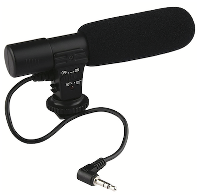

Participants overview
The collaborating sites in PLAY perform a variety of roles (see people for details). Each site that performs a collecting role is pre-assigned to complete all of the collecting functions (see in blue below). This page contains detailed help for the recruitment of participants. Click here for information about the data collection and data upload processes.

PLAY aims to set new standards for conducting open, transparent, and reproducible behavioral science by i) publishing the protocol, and ii) making extensive use of video exemplars to demonstrate phenomena and illustrate behavioral codes. For confidentiality reasons, access to video exemplars is restricted to researchers with authorized access to Databrary. To register for access, visit http://databrary.org/register.
Please ensure that you are currently logged in at Databrary to view embedded video examples in this webpage and gain access to phone and home questionnaires.
Participant Sampling
PLAY will produce a widely varied and rich set of data, most of which will be openly shared with the research community at the end of the five-year NIH grant period in late 2023. Infants’ natural play in the home is characterized by tremendous variability including variations in: geographic location, climate, SES, maternal/paternal employment, childcare experiences, infants’ and mothers’ ages, language environment, physical layout and characteristics of the home, availability of media, toys for play, and so on. Researchers will be able to explore the effects of any/all such factors.
Inclusion/Exclusion Criteria
Although PLAY endeavours to sample as much of the rich variations that the collection sites present, based on conversations with the launch group, we will limit variability along several dimensions. To be included in the PLAY sample of 900 sessions, participants must be:
- from two-parent or single-parent households
- English or Spanish monolingual or bilingual (i.e., no other language exposure in the home)
- the firstborn child (i.e., only child in the household)
- 12, 18, or 24 months of age (+/- 1 week)
- born full-term (37-40 weeks) without known disabilities
Additionally, the mother must act as the caregiver during the one-hour natural interaction, which will be scheduled at a time when only the mother and infant are present.
Collection sites
Data will come from 30 geographically diverse sites across the US representing rural, suburban, and urban communities with different races, ethnicities, and socio-economic status, including English- and Spanish-speaking households.
The aim is to collect data that approximate county-level demographic characteristics as reflected in U.S. Census data.
Map

Racial composition

Socio-economic status

Education

Languages spoken

Video
All data collections will be recorded on video. Parents will be asked for their permission to share the video recordings and other data with the research community. When that permission is granted the videos and related data will be shared with the research community via Databrary:
- Adolph, K., Tamis-LeMonda, C., Gilmore, R.O. & Soska, K. (2016). PLAY Project: NICHD Workshop (2016-12-16). Databrary. Retrieved August 23, 2018 from http://doi.org/10.17910/B7.254.
- Adolph, K., Tamis-LeMonda, C. & Gilmore, R.O. (2017). PLAY Project: Pilot Data Collections. Databrary. Retrieved August 23, 2018 from https://nyu.databrary.org/volume/444.
- Adolph, K., Tamis-LeMonda, C., Gilmore, R.O. & Soska, K. (2018). Play & Learning Across a Year (PLAY) Project Summit (2018-06-29 Philadelphia). Databrary. Retrieved August 23, 2018 from http://doi.org/10.17910/B7.724
Parent-report (questionnaire) data
PLAY researchers will collect and share a substantial corpus of parent-report (questionnaire) data.
The full set of self-report questions can be found here. A database/code book of the questionnaire items useful for item-level queries can be found in a Googlesheet here. The googlesheets R package makes it easy to interact with data in this format. We expect to migrate to successors to this package.
Participant Recruitment
1. Scheduling Visit
To schedule a visit, you will be making two phone calls to each family: the initial recruiting call and the confirmation call (if the family agrees to participate). Depending on the availability of the mother, you will complete the participant paperwork
1.1 Initial recruiting call
- → If yes: end call.
In this study, we are currently looking for only-children. Would it be alright if we contacted you for other studies in the future? - → If no: continue
- → If not ENGLISH or SPANISH: end call.
To control for differences in communication, we are looking for families who speak mainly English or Spanish. Would it be alright if we contacted you for other studies in the future? - → If mainly English/Spanish: continue
- → If more than 4 weeks early: end call.
In this study, we are currently looking for children born on term. Would it be alright if we contacted you for other studies in the future? - → If born on term (37-41 weeks): continue
- → If no to study or to sharing video on Databrary: end call
Okay, thank you. May we call you for other studies? - → If yes: continue
- → If the date they are available puts baby out of age range: end call
For this study, we are interested in studying specific age groups: 12-, 18-, and 23-month olds. Would it be possible for us to contact you in XX months to see if [CHILD] can participate then? - → If yes, continue
- → If ready to answer now, continue:
- On your tablet, open Kobo toolbox and start a new questionnaire set
- Fill out participant information at top of new session
- “Save as Draft” after Phone Questionnaire and home visit questionnaires
- Only hit “Submit” after filling out clean-up notes back in lab
- List of questions on the Phone Questionnaire
- Please note that presentation and format will differ in the app.
- → If not available now
When will be a good time to call back about the questions? - If another time work, schedule a 5-minute call to complete phone questionnaire
- If difficult to find a time up to 2 days before visit, complete phone questionnaire when confirming visit
Voicemail
1.2 Email confirmation of visit (2 days before visit)
[insert sample email script here]
1.3 Confirming the visit (1 day before visit)
[insert 4 videos here]
- → If phone questionnaire was not completed during initial phone call:
Before the visit, I’d like to ask you a few questions. It will only take 5 minutes of your time. Just as a reminder, the data we collect from you now and during the visit, will be shared on a web-based library only available to researchers like the professor who runs this lab. - On your tablet, open Kobo toolbox and start a new questionnaire set
- Fill out participant information at top of new session
- “Save as Draft” after Phone Questionnaire and home visit questionnaires
- Only hit “Submit” after filling out clean-up notes back in lab
- List of questions on the Phone Questionnaire
- Please note that presentation and format will differ in the app.
- → If phone questionnaire has been completed: proceed.
- → If yes:
That’s great! I will see you - → If no: rechedule, make sure that child will still be within age range
2. Preparing for Visit
2.1 Pack
| Camera, SD card and extra battery |

|
Microphone with sponge cover |  |
| Fully loaded and charged tablet |

|
Laser Measure |

|
| Decibel meter mic |

|
Tripod for camera |

|
| Tote bag |

|
Yoga mat |

|
| Dish set |

|
Toy |

|
| Participant payment |

|
Paper backups of all questionnaires and forms |

|
2.2 Prepare
- Take your own water with you. For the duration of the visit, you will decline any offerings of food or drink.
- Take your university ID with you, be prepared to show it if asked.
- Dress plainly, modestly, neutrally. Nothing too bright and attractive to children. Try not to wear all black either :)
- Avoid strong perfumes and noisy jewelry. The idea is to blend into the background as much as possible.
- Be prepared to plan your bathroom breaks around the visit (it will be approx 2.5 hrs long).
Except where otherwise noted, content on this site is licensed under a Creative Commons Attribution 4.0 International (CC BY 4.0) license.